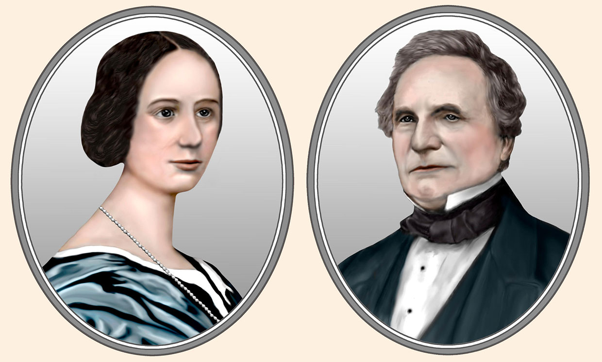
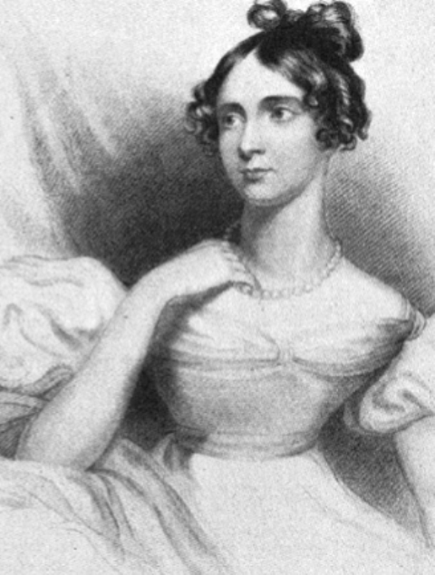
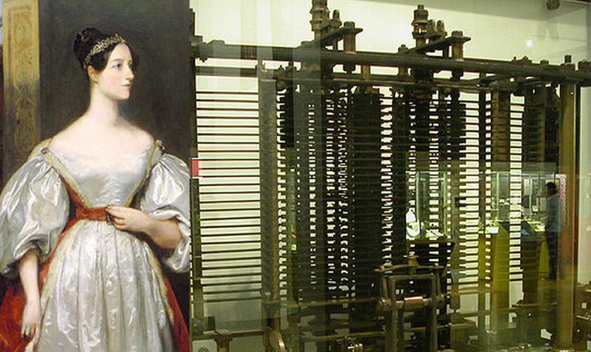
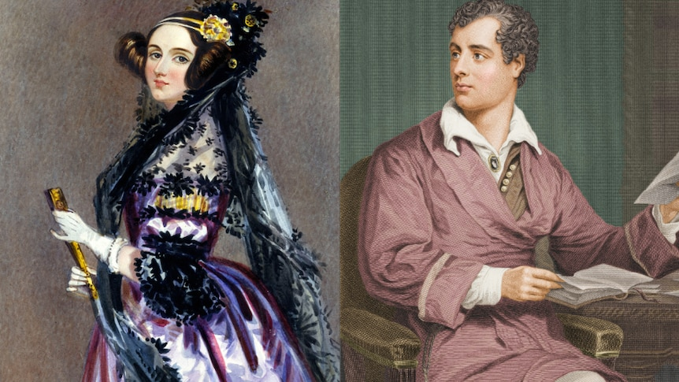
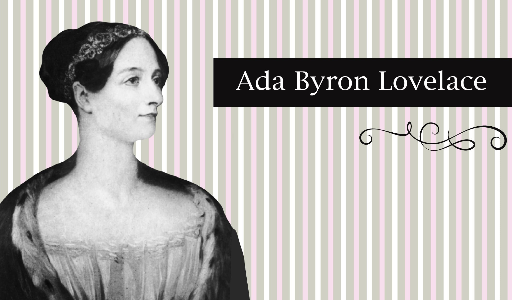
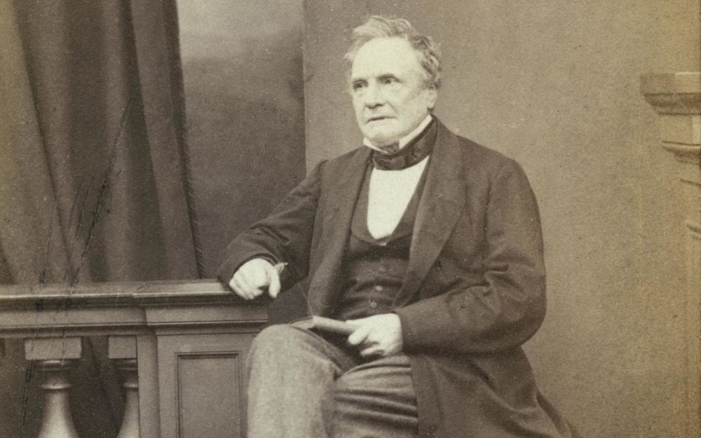
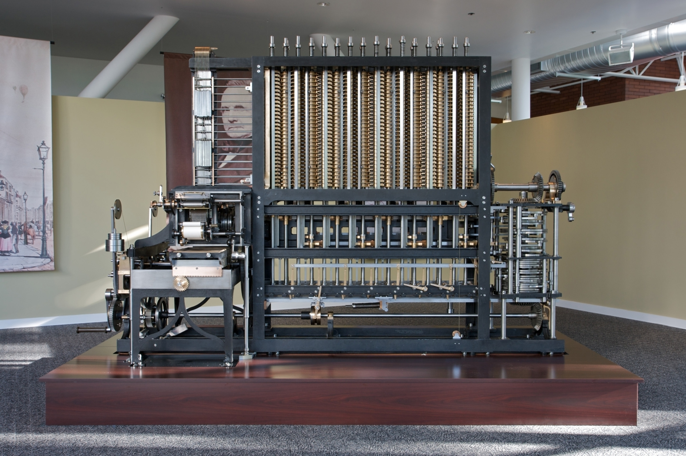

Ada Lovelace and Charles Babbage

Ada Lovelace is the first female programmer.
She was born 10 december, London, England. She died 27 November 1852 (aged 36), London, England.
The first fact. Like Leonardo da Vinci
Since childhood Ada was strong in mathematics.
At the age of 13, Ada already had several drawings of aircraft.

The second fact. Fateful meeting
At the age of 17, Ada she met the famous professor of mathematics, Charles Babbage.

The third fact. Family is not a hindrance
At the age of 19 Ada Byron got married a Lord Lovelace.
He helped her financially and did not limit her time in her hobbies.

The fourth fact. The first software
She create the work, which consists of an English translation of an article describing Babbage's invention.
And developed of an operation plan for the analytical machine.
This was the first programming!
The fifth fact. The ability to predict the future
She always said that the capabilities of such machines are not limited!
And she boldly suggested that the time would come when a computer would be so advanced that it would be able to create amazing pieces of music.

Charles Babbage - mathematician and inventor first computer of the world.

The analytical machine, invented by Charles, is a direct prototype of the modern digital computer.

Thank you for your attention:)